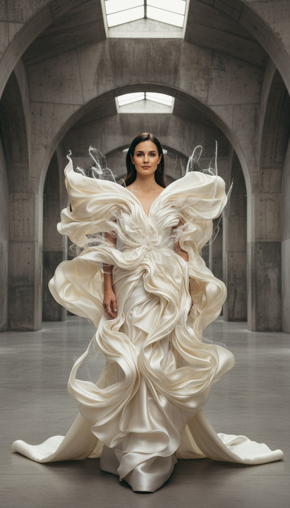
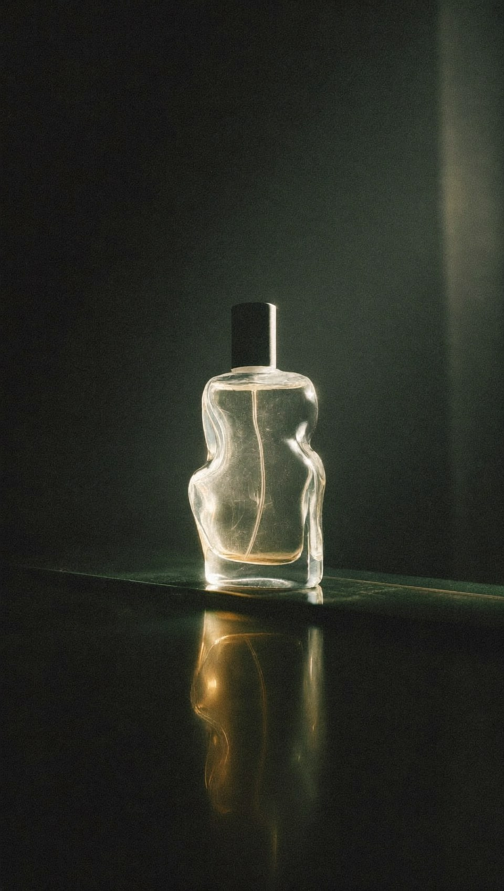
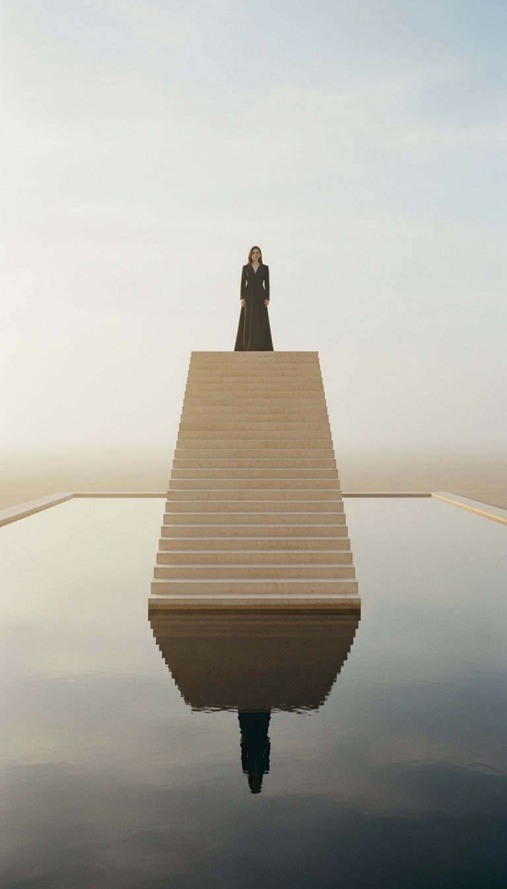
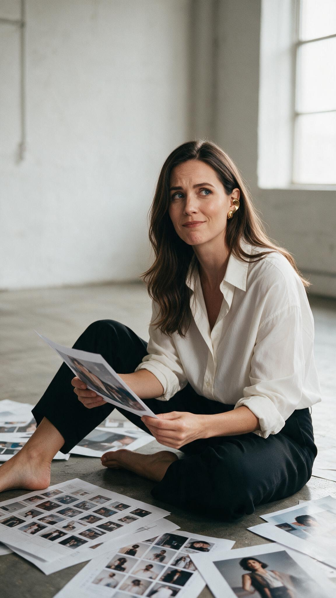

Creative Director · Designer · Visual Storyteller
Creative direction for worlds that do not exist yet.
I work somewhere between image, instinct and technology.
Selected worlds


Selected work

What do you remember
after someone leaves the room?
That — is the brand.

The person behind the work
Mara Vale is not a portfolio. It is a point of view rendered as a world.
The work moves between fashion, AI image-making, art direction and moving image — but it is held together by one thing: a way of seeing. Identity, website, motion and selected work are shaped around a single recognisable presence, so that the brand is felt before it is understood.
A personal brand is not a logo, a face or a feed. It is the expectation people carry before you enter the room — and the impression they keep after you leave it.
What can be shaped together
The idea, the feeling and the through-line — before anything is designed.
Identity, typography, image language and the world they live inside.
Editorial film, AI-crafted visuals and campaigns that move.
Inquiry
For a brand, a founder or a world ready to be perceived at its real value.
hello@ayamuse.com